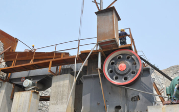

Stone crusher is also called rock stone crusher, is a kind of stone crushing equipment, the most commonly used stone crusher mainly in the following four.
Jaw crusher is one of the stone crusher and stone crusher most commonly used crushing equipment, jaw stone crusher and stone crusher is mainly used in mining, metallurgy, building material, highway, railway, water conservancy and chemical industry and other industry a variety of ores and bulk materials of medium-grained broken, can be broken compressive strength of not more than 320Mpa materials, stone jaw crusher and stone crusher break points coarse and fine broken two kinds. I produced jaw crusher absorption of foreign advanced technology, combined with sand and gravel industry research and development from the specific mining conditions, with crushing ratio, high yield, even granularity, simple structure, reliable operation, easy maintenance, operating costs and economic and so on.
Impact stone crusher and stone crusher is a use of the use of impact energy to break the material broken machinery. It uses the latest manufacturing technology, the unique structural design, processing was finished cube, no tension and cracks, grain shape is quite good, can crusher feed size of not more than 500mm, not more than 350MPa compressive strength of various coarse, medium and fine materials, with its crushing ratio, high crushing efficiency, easy maintenance and in highway construction, water conservancy and construction gravel processing is widely used in the field.
Hammer stone crusher and stone crusher is widely used in the concentrator, refractory plants, cement, glass and other industrial sectors in the fine grinding of materials with medium hardness. Can be used for dry and wet broken in two forms, wet the material is wet ground water seepage, leakage is not allowed to dry and dry grinding.
Sand making machine is the years of research and mining equipment crystallization of wisdom and the right decisions, is an internationally advanced level of low energy equipment, its performance plays an irreplaceable role in a variety of ores thin broken equipment, is currently the most row effective, practical and reliable gravel machine.
Live chat with our professional customer service! Get the quotation list.
Chat Now